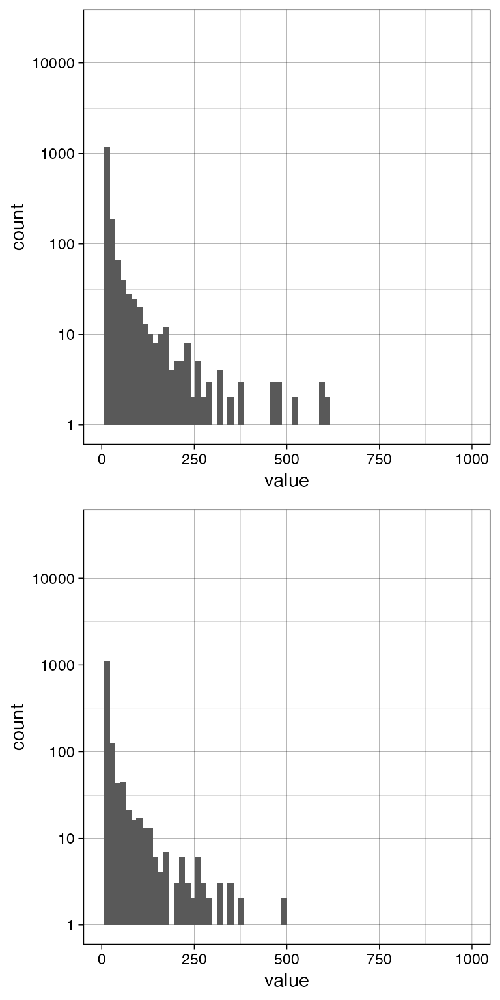
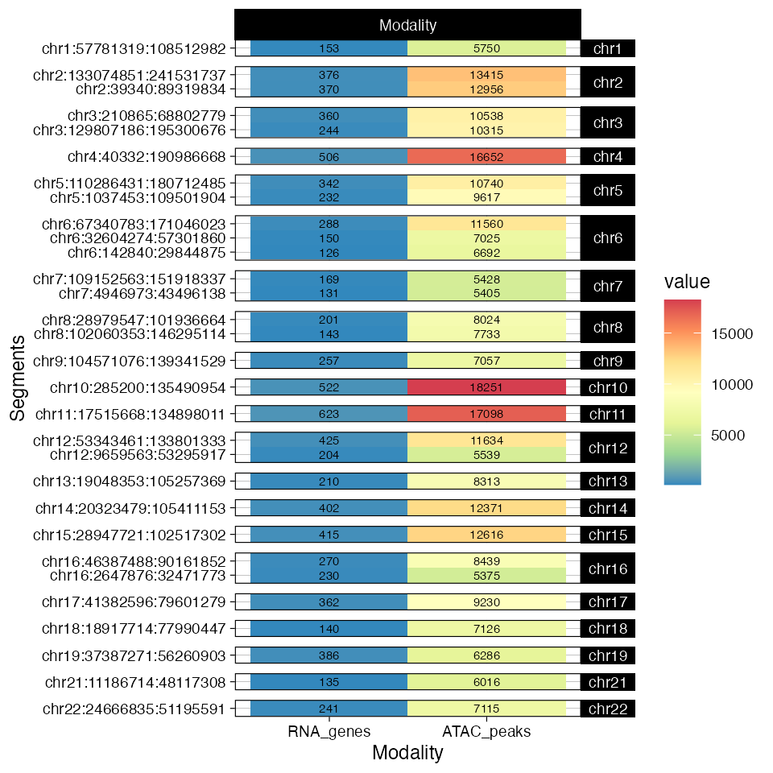
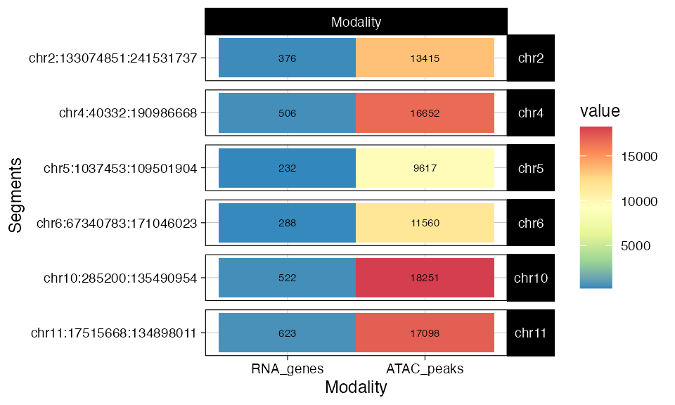
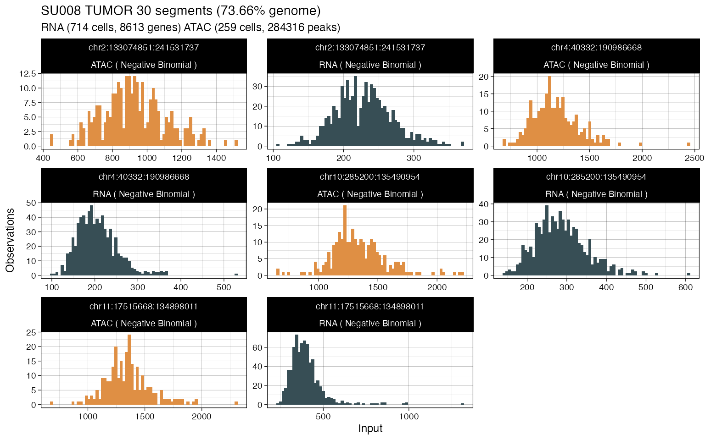
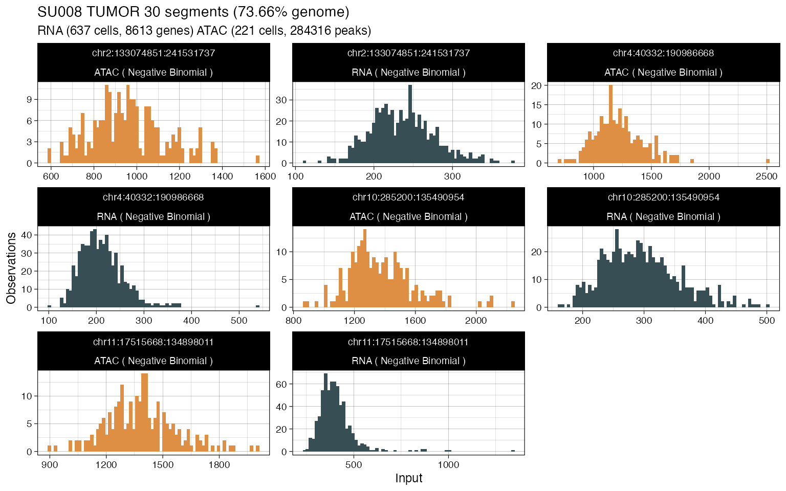

Filtering functions are available to process data before or after it is loaded into the package.
pre-process data that is ready for usage in the tool, returning an equivalent tibble with fewer rows;
process data that has already being inputed to the tool, returning a new rcongasplus object.
data("example_input")Ribosomal (r) and mitochondrial (m) genes can be removed with function filter_known_genes. This function takes in input a what parameter (default mr) which determines what genes should be removed, plus an extra specials list of gene names to remove.
# The default value for `specials`
formals(filter_known_genes)$specials
#> [1] "MALAT1"Mitochondrial and ribosomal genes are identified by name using regular expression "MT" or "RP[SL]", respectively.
To use this filter tf the input RNA data must contain a
genecolumn.
example_input$rna %>% print
#> # A tibble: 201,459 x 6
#> gene chr from to cell value
#> <chr> <chr> <int> <int> <chr> <int>
#> 1 NOC2L chr1 944203 959309 bcc.su008.pre.tumor_AAGGCAGTCACCGTAA 2
#> 2 AGRN chr1 1020120 1056118 bcc.su008.pre.tumor_AAGGCAGTCACCGTAA 1
#> 3 SDF4 chr1 1216909 1232067 bcc.su008.pre.tumor_AAGGCAGTCACCGTAA 1
#> 4 ACAP3 chr1 1292390 1309609 bcc.su008.pre.tumor_AAGGCAGTCACCGTAA 2
#> 5 CPTP chr1 1324756 1328896 bcc.su008.pre.tumor_AAGGCAGTCACCGTAA 1
#> 6 AURKAIP1 chr1 1373730 1375495 bcc.su008.pre.tumor_AAGGCAGTCACCGTAA 1
#> 7 CCNL2 chr1 1385711 1399335 bcc.su008.pre.tumor_AAGGCAGTCACCGTAA 2
#> 8 MRPL20 chr1 1401909 1407293 bcc.su008.pre.tumor_AAGGCAGTCACCGTAA 1
#> 9 CDK11B chr1 1635225 1659012 bcc.su008.pre.tumor_AAGGCAGTCACCGTAA 1
#> 10 CDK11A chr1 1702379 1724357 bcc.su008.pre.tumor_AAGGCAGTCACCGTAA 1
#> # … with 201,449 more rows
# Remove default
example_input$rna %>% filter_known_genes()
#>
#> ── Ribosomal
#> ℹ n = 166 genes found.
#> MRPL20, RPL22, RPL11, MRPS15, RPS8, RPL5 , ...
#>
#> ── Mitochondrial
#> ℹ 180 genes found.
#> ICMT, CAMTA1, MTF2, HENMT1, LAMTOR5, MTMR11 , ...
#>
#> ── Specials
#> ℹ n = 1 genes found.
#> # A tibble: 190,566 x 6
#> gene chr from to cell value
#> <chr> <chr> <int> <int> <chr> <int>
#> 1 NOC2L chr1 944203 959309 bcc.su008.pre.tumor_AAGGCAGTCACCGTAA 2
#> 2 AGRN chr1 1020120 1056118 bcc.su008.pre.tumor_AAGGCAGTCACCGTAA 1
#> 3 SDF4 chr1 1216909 1232067 bcc.su008.pre.tumor_AAGGCAGTCACCGTAA 1
#> 4 ACAP3 chr1 1292390 1309609 bcc.su008.pre.tumor_AAGGCAGTCACCGTAA 2
#> 5 CPTP chr1 1324756 1328896 bcc.su008.pre.tumor_AAGGCAGTCACCGTAA 1
#> 6 AURKAIP1 chr1 1373730 1375495 bcc.su008.pre.tumor_AAGGCAGTCACCGTAA 1
#> 7 CCNL2 chr1 1385711 1399335 bcc.su008.pre.tumor_AAGGCAGTCACCGTAA 2
#> 8 CDK11B chr1 1635225 1659012 bcc.su008.pre.tumor_AAGGCAGTCACCGTAA 1
#> 9 CDK11A chr1 1702379 1724357 bcc.su008.pre.tumor_AAGGCAGTCACCGTAA 1
#> 10 WRAP73 chr1 3630767 3652761 bcc.su008.pre.tumor_AAGGCAGTCACCGTAA 2
#> # … with 190,556 more rowsRemove only ribosomal genes.
example_input$rna %>% filter_known_genes(what = 'r', specials = list())
#>
#> ── Ribosomal
#> ℹ n = 166 genes found.
#> MRPL20, RPL22, RPL11, MRPS15, RPS8, RPL5 , ...
#> # A tibble: 194,236 x 6
#> gene chr from to cell value
#> <chr> <chr> <int> <int> <chr> <int>
#> 1 NOC2L chr1 944203 959309 bcc.su008.pre.tumor_AAGGCAGTCACCGTAA 2
#> 2 AGRN chr1 1020120 1056118 bcc.su008.pre.tumor_AAGGCAGTCACCGTAA 1
#> 3 SDF4 chr1 1216909 1232067 bcc.su008.pre.tumor_AAGGCAGTCACCGTAA 1
#> 4 ACAP3 chr1 1292390 1309609 bcc.su008.pre.tumor_AAGGCAGTCACCGTAA 2
#> 5 CPTP chr1 1324756 1328896 bcc.su008.pre.tumor_AAGGCAGTCACCGTAA 1
#> 6 AURKAIP1 chr1 1373730 1375495 bcc.su008.pre.tumor_AAGGCAGTCACCGTAA 1
#> 7 CCNL2 chr1 1385711 1399335 bcc.su008.pre.tumor_AAGGCAGTCACCGTAA 2
#> 8 CDK11B chr1 1635225 1659012 bcc.su008.pre.tumor_AAGGCAGTCACCGTAA 1
#> 9 CDK11A chr1 1702379 1724357 bcc.su008.pre.tumor_AAGGCAGTCACCGTAA 1
#> 10 WRAP73 chr1 3630767 3652761 bcc.su008.pre.tumor_AAGGCAGTCACCGTAA 2
#> # … with 194,226 more rowsCertain genes can have very high counts in certain cells.
# Plot the distribution of maxima for each gene count (RNA data)
my_view = function(x) x %>%
group_by(gene) %>%
filter(value == max(value)) %>% # max only
ggplot(aes(value)) +
geom_histogram(bins = 70) +
scale_y_log10() +
theme_linedraw() +
xlim(0, 1000)
cowplot::plot_grid(
example_input$rna %>% my_view,
example_input$rna %>%
filter_counts_by_quantile %>% # Filter
my_view,
nrow = 2
)
#>
#> ── Upper quantile 0.98
#> ℹ n = 5961 entries to remove
#>
#> # A tibble: 5,961 x 8
#> gene chr from to cell value q_max del
#> <chr> <chr> <int> <int> <chr> <int> <dbl> <lgl>
#> 1 ACAP3 chr1 1.29e6 1.31e6 bcc.su008.pre.tumor_AAGGCA… 2 1.88 TRUE
#> 2 ZBTB40 chr1 2.24e7 2.25e7 bcc.su008.pre.tumor_AAGGCA… 2 1.8 TRUE
#> 3 SRRM1 chr1 2.46e7 2.47e7 bcc.su008.pre.tumor_AAGGCA… 12 11.8 TRUE
#> 4 TXNDC12 chr1 5.20e7 5.21e7 bcc.su008.pre.tumor_AAGGCA… 6 5.42 TRUE
#> 5 ALG6 chr1 6.34e7 6.34e7 bcc.su008.pre.tumor_AAGGCA… 3 2.66 TRUE
#> 6 SSX2IP chr1 8.46e7 8.47e7 bcc.su008.pre.tumor_AAGGCA… 3 2.78 TRUE
#> 7 MTF2 chr1 9.31e7 9.31e7 bcc.su008.pre.tumor_AAGGCA… 4 3.34 TRUE
#> 8 GPSM2 chr1 1.09e8 1.09e8 bcc.su008.pre.tumor_AAGGCA… 8 6.5 TRUE
#> 9 CELSR2 chr1 1.09e8 1.09e8 bcc.su008.pre.tumor_AAGGCA… 4 3.32 TRUE
#> 10 RBM15 chr1 1.10e8 1.10e8 bcc.su008.pre.tumor_AAGGCA… 5 4.16 TRUE
#> # … with 5,951 more rows
#> Warning: Removed 3 rows containing non-finite values (stat_bin).
#> Warning: Transformation introduced infinite values in continuous y-axis
#> Warning: Removed 29 rows containing missing values (geom_bar).
#> Warning: Transformation introduced infinite values in continuous y-axis
#> Warning: Removed 37 rows containing missing values (geom_bar).
These outliers will affect the overall counts per segment used by Rcongas models, and can be removed using function filter_counts_by_quantile, which computes an empirical quantile \(q\) per event in the data (gene for RNA and peaks for ATAC).
The default quantile value for \(q\) is 98% (upper_quantile = .98).
data("example_object")
example_object %>% print()
#> ── [ (R)CONGAS+ ] SU008 TUMOR 30 segments (73.66% genome) ──────────────────────
#>
#> ── CNA segments (reference: GRCh38)
#> → Input 30 CNA segments, mean ploidy 3.2.
#>
#> | | | | | | | | | | | | | | | | | | | |
#>
#> Ploidy: 0 1 2 3 4 5 *
#>
#> ── Modalities
#> → RNA: 714 cells with 8613 mapped genes, 1401728 non-zero values. Likelihood: Negative Binomial.
#> → ATAC: 259 cells with 284316 mapped peaks, 3083691 non-zero values. Likelihood: Negative Binomial.
#> ! Clusters: not available.
#>
#> ── LOG ──
#>
#> - 2021-03-30 17:58:41 Created input object.
#> - 2021-03-30 17:58:43 Filtered outliers: [6|0.05|0.95]
#> [1] 0
example_object %>%
plot_data(what = 'mapping')
Segments that are too short, or have few mapped RNA genes or ATAC peaks can be removed using function filter_segments.
# Retain segments longer than 100 Megabases
example_object %>%
filter_segments(length = 1e8, RNA_genes = 0, ATAC_peaks = 0) %>%
plot_data(what = 'mapping')
#> ── Segments filter
#> → 6 retained segments out of 30.
After mapping counts data to segments, a function can be used to determine quantiles of mapped data, for every cell, and identify outliers in each segment and modality.
Outliers are identified by using a quantile range \(q = (q_l, q_r)\) with \(q_r,q_l\in [0,1]\) reporting lower and upper quantiles. The quantiles are computed and applied per segment.
For every cell we count how often that is an oulier - i.e., in how many of the input segments - and remove it if this frequency si above a certain cutoff.
# Some segments from the object
segment_id = example_object %>%
get_input('segmentation') %>%
pull(segment_id)
segment_id = segment_id[1:4]
# Original segment plot
example_object %>%
plot_data(what = 'histogram', segments = segment_id)
#> → Normalising RNA counts using input normalisation factors.
#> → Normalising ATAC counts using input normalisation factors.
# Filter with 5%/95% values
example_object %>%
filter_outliers(lower_quantile = .05, upper_quantile = .95) %>%
plot_data(what = 'histogram', segments = segment_id)
#>
#> ── RNA outliers detection via quantiles: lower 0.05, upper 0.95.
#> → Normalising RNA counts using input normalisation factors.
#> → 77 out of 714 will be removed (11%)
#>
#> ── ATAC outliers detection via quantiles: lower 0.05, upper 0.95.
#> → Normalising ATAC counts using input normalisation factors.
#> → 38 out of 259 will be removed (15%)
#> → Normalising RNA counts using input normalisation factors.
#> → Normalising ATAC counts using input normalisation factors.
Some cells can have have 0-counts because they have no events mapping to a certain segment, or because some heavy filtering inflated the number of 0-count cells. These generally count as missing data
Missing data will be imputed to have value 0 before fit, and excessive 0s will force the model use mixture components peaked at 0. We suggest therefore to remove these entries or at least try to keep their number to a minimum.
A filter is available to remove cells with missing data above a proportion \(p\in[0,1]\) of the number of input segments (e.g., all cells with >20% of segments with missing data).
The presence of missing data is reported by a print to console of an object.
example_object %>% print
#> ── [ (R)CONGAS+ ] SU008 TUMOR 30 segments (73.66% genome) ──────────────────────
#>
#> ── CNA segments (reference: GRCh38)
#> → Input 30 CNA segments, mean ploidy 3.2.
#>
#> | | | | | | | | | | | | | | | | | | | |
#>
#> Ploidy: 0 1 2 3 4 5 *
#>
#> ── Modalities
#> → RNA: 714 cells with 8613 mapped genes, 1401728 non-zero values. Likelihood: Negative Binomial.
#> → ATAC: 259 cells with 284316 mapped peaks, 3083691 non-zero values. Likelihood: Negative Binomial.
#> ! Clusters: not available.
#>
#> ── LOG ──
#>
#> - 2021-03-30 17:58:41 Created input object.
#> - 2021-03-30 17:58:43 Filtered outliers: [6|0.05|0.95]
#> [1] 0Now we apply the filter (e.g., proportion_RNA = 0 means that cells with >0 missing data are removed).
example_object = example_object %>% filter_missing_data(proportion_RNA = 0, proportion_ATAC = 0)Now the object has fewer cells.
example_object %>% print
#> ── [ (R)CONGAS+ ] SU008 TUMOR 30 segments (73.66% genome) ──────────────────────
#>
#> ── CNA segments (reference: GRCh38)
#> → Input 30 CNA segments, mean ploidy 3.2.
#>
#> | | | | | | | | | | | | | | | | | | | |
#>
#> Ploidy: 0 1 2 3 4 5 *
#>
#> ── Modalities
#> → RNA: 714 cells with 8613 mapped genes, 1401728 non-zero values. Likelihood: Negative Binomial.
#> → ATAC: 259 cells with 284316 mapped peaks, 3083691 non-zero values. Likelihood: Negative Binomial.
#> ! Clusters: not available.
#>
#> ── LOG ──
#>
#> - 2021-03-30 17:58:41 Created input object.
#> - 2021-03-30 17:58:43 Filtered outliers: [6|0.05|0.95]
#> [1] 0